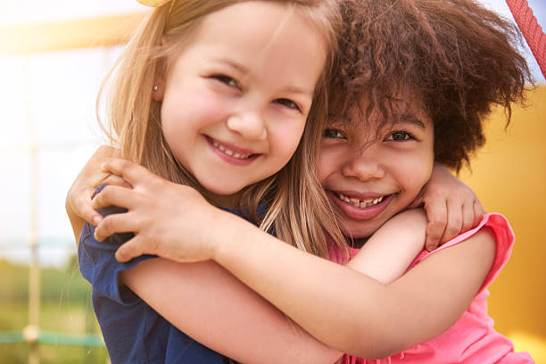

Quem Somos?
Somos uma organização sem fins lucrativos baseada na fraternidade e empatia, que atua em prol do bem estar da comunidade e familias em inclusão social.
Fale Conosco!
Quero Ser VoluntárioEndereço Rodovia José Carlos Daux, 1500 - Bairro: Jurere - Cidade: Florianópolis/SC
Celular: (99)99999-9999
Email: contato@voluntariado.org.com